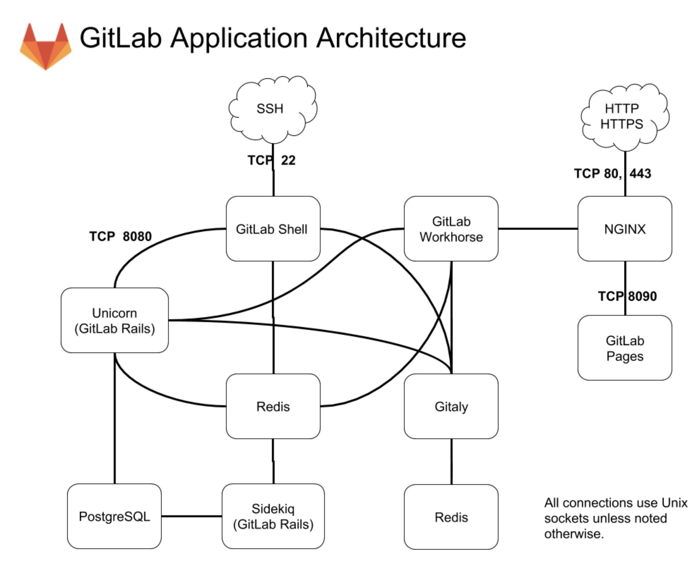
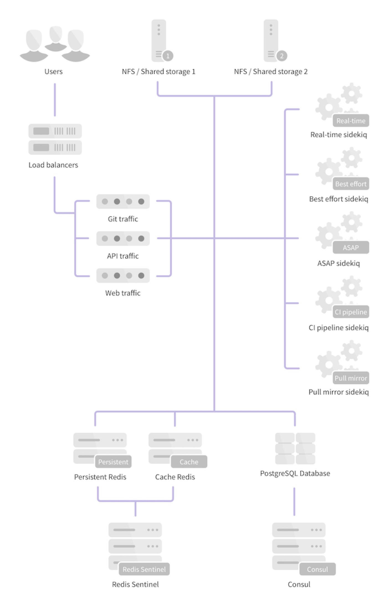

- 00 开篇词 量身定制你的持续交付体系.md.html
- 01 持续交付到底有什么价值？.md.html
- 02 影响持续交付的因素有哪些？.md.html
- 03 持续交付和DevOps是一对好基友.md.html
- 04 一切的源头，代码分支策略的选择.md.html
- 05 手把手教你依赖管理.md.html
- 06 代码回滚，你真的理解吗？.md.html
- 07 “两个披萨”团队的代码管理实际案例.md.html
- 08 测试环境要多少？从现实需求说起.md.html
- 09 测试环境要多少？从成本与效率说起.md.html
- 10 让环境自己说话，论环境自描述的重要性.md.html
- 11 “配置”是把双刃剑，带你了解各种配置方法.md.html
- 12 极限挑战，如何做到分钟级搭建环境？.md.html
- 13 容器技术真的是环境管理的救星吗？.md.html
- 14 如何做到构建的提速，再提速！.md.html
- 15 构建检测，无规矩不成方圆.md.html
- 16 构建资源的弹性伸缩.md.html
- 17 容器镜像构建的那些事儿.md.html
- 18 如何做好容器镜像的个性化及合规检查？.md.html
- 19 发布是持续交付的最后一公里.md.html
- 20 Immutable！任何变更都需要发布.md.html
- 21 发布系统一定要注意用户体验.md.html
- 22 发布系统的核心架构和功能设计.md.html
- 23 业务及系统架构对发布的影响.md.html
- 24 如何利用监控保障发布质量？.md.html
- 25 代码静态检查实践.md.html
- 26 越来越重要的破坏性测试.md.html
- 27 利用Mock与回放技术助力自动化回归.md.html
- 28 持续交付为什么要平台化设计？.md.html
- 29 计算资源也是交付的内容.md.html
- 30 持续交付中有哪些宝贵数据？.md.html
- 31 了解移动App的持续交付生命周期.md.html
- 32 细谈移动APP的交付流水线（pipeline）.md.html
- 33 进阶，如何进一步提升移动APP的交付效率？.md.html
- 34 快速构建持续交付系统（一）：需求分析.md.html
- 35 快速构建持续交付系统（二）：GitLab 解决代码管理问题.md.html
- 36 快速构建持续交付系统（三）：Jenkins 解决集成打包问题.md.html
- 37 快速构建持续交付系统（四）：Ansible 解决自动部署问题.md.html
- 持续交付专栏特别放送 答疑解惑.md.html
- 持续交付专栏特别放送 高效学习指南.md.html
- 结束语 越痛苦的事，越要经常做.md.html
- 捐赠
35 快速构建持续交付系统（二）：GitLab 解决代码管理问题
在上一篇文章中，我和你一起理清了我们即将构建的持续交付系统的需求，以及要具备的具体功能。那么，从这一篇文章开始，我们就要正式进入实战阶段了。我会和你详细介绍基于开源工具，从0开始搭建一套持续交付平台的详细过程，以及整合各个持续交付工具的一些技术细节。
按照我在前面分享的内容，搭建一套持续交付系统的第一步，就是搭建一套代码管理平台。这里我选择的开源工具是GitLab，它是一套高仿GitHub的开源代码共享管理平台，也是目前最好的开源解决方案之一。
接下来，我们就从使用GitLab搭建代码管理平台开始吧，一起看看搭建GitLab平台的过程中可能遇到的问题，以及如何解决这些问题。
利用GitLab搭建代码管理平台
GitLab早期的设计目标是，做一个私有化的类似GitHub的Git代码托管平台。
我第一次接触GitLab是2013年, 当时它的架构很简单，SSH权限控制还是通过和Gitolite交互实现的，而且也只有源码安装（标准Ruby on Rails的安装方式）的方式。
这时，GitLab给我最深的印象是迭代速度快，每个月至少会有1个独立的release版本，这个传统也一直被保留至今。但是，随着GitLab的功能越来越丰富，架构和模块越来越多，也越来越复杂。
所以，现在基于代码进行部署的方式就过于复杂了, 初学者基本无从下手。
因此，我建议使用官方的Docker镜像或一键安装包Omnibus安装GitLab。
接下来，我就以Centos 7虚拟机为例，描述一下整个Omnibus GitLab的安装过程，以及注意事项。
在安装前，你需要注意的是如果使用虚拟机进行安装测试，建议虚拟机的“最大内存”配置在4 G及以上，如果小于2 G，GitLab可能会无法正常启动。
安装GitLab
安装SSH等依赖，配置防火墙。
sudo yum install -y curl policycoreutils-python openssh-server sudo systemctl enable sshd sudo systemctl start sshd sudo firewall-cmd –permanent –add-service=http sudo systemctl reload firewalld
安装Postfix支持电子邮件的发送。
sudo yum install postfix sudo systemctl enable postfix sudo systemctl start postfix
从rpm源安装，并配置GitLab的访问域名，测试时可以将其配置为虚拟机的IP（比如192.168.0.101）。
curl https://packages.gitlab.com/install/repositories/gitlab/gitlab-ee/script.rpm.sh | sudo bash
sudo EXTERNAL_URL=”http://192.168.0.101” yum install -y gitlab-ee
整个安装过程，大概需要10分钟左右。如果一切顺利，我们已经可以通过 “http://192.168.0.101” 这个地址访问GitLab了。
如果你在安装过程中，遇到了一些问题，相信你可以在GitLab的官方文档中找到答案。
配置GitLab
安装完成之后，还要进行一些系统配置。对于Omnibus GitLab的配置，我们只需要重点关注两方面的内容：
使用命令行工具gitlab-ctl，管理Omnibus GitLab的一些常用命令。- 比如，你想排查GitLab的运行异常，可以执行 gitlab-ctl tail 查看日志。
配置文件/etc/gitlab/gitlab.rb，包含所有GitLab的相关配置。邮件服务器、LDAP账号验证，以及数据库缓存等配置，统一在这个配置文件中进行修改。- 比如，你想要修改GitLab的外部域名时, 可以通过一条指令修改gitlab.rb文件：
external_url ‘http://newhost.com’
然后，执行 gitlab-ctl reconfigure重启配置GitLab即可。
关于GitLab更详细的配置，你可以参考官方文档。
GitLab的二次开发
在上一篇文章中，我们一起分析出需要为Jar包提供一个特殊的发布方式，因此我们决定利用GitLab的二次开发功能来满足这个需求。
对GitLab进行二次开发时，我们可以使用其官方开发环境 gdk（ https://gitlab.com/gitlab-org/gitlab-development-kit）。但，如果你是第一次进行GitLab二次开发的话，我还是建议你按照 https://docs.gitlab.com/ee/install/installation.html 进行一次基于源码的安装，这将有助于你更好地理解GitLab的整个架构。
为了后面更高效地解决二次开发的问题，我先和你介绍一下GitLab的几个主要模块：
- Unicorn，是一个Web Server，用于支持 GitLab的主体Web应用；
- Sidekiq，队列服务，需要Redis支持，用以支持GitLab的异步任务；
- GitLab Shell，Git SSH的权限管理模块；
- Gitaly，Git RPC服务，用于处理GitLab发出的git操作；
- GitLab Workhorse，基于Go语言，用于接替Unicorn处理比较大的http请求。

图1 GitLab架构图（引自GitLab官网）
对GitLab应用层的修改，我们主要关注的是GitLab Rails和GitLab Shell这两个子系统。
接下来，我们一起看一个二次开发的具体实例吧。
二次开发的例子
二次开发，最常见的是对GitLab添加一个外部服务调用，这部分需要在app/models/project_services下面添加相关的代码。
我们可以参考GitLab对Microsoft Teams的支持方式：
在app/models/project_services/microsoft_teams_service.rb下，添加一些可配置内容及其属性，这样我们就可以在GitLab的service模块页面下看到相应的配置项了。
frozen_string_literal: true
class MicrosoftTeamsService < ChatNotificationService def title
'Microsoft Teams Notification'end
def description
'Receive event notifications in Microsoft Teams'end
def self.to_param
'microsoft_teams'end
def help
'This service sends notifications about projects events to Microsoft Teams channels.<br /> To set up this service: <ol> <li><a href="https://msdn.microsoft.com/en-us/microsoft-teams/connectors">Getting started with 365 Office Connectors For Microsoft Teams</a>.</li> <li>Paste the <strong>Webhook URL</strong> into the field below.</li> <li>Select events below to enable notifications.</li> </ol>'end
def webhook_placeholder
'https://outlook.office.com/webhook/…'end
def event_field(event) end
def default_channel_placeholder end
def default_fields
[ { type: 'text', name: 'webhook', placeholder: "e.g. #{webhook_placeholder}" }, { type: 'checkbox', name: 'notify_only_broken_pipelines' }, { type: 'checkbox', name: 'notify_only_default_branch' } ]end
private
def notify(message, opts)
MicrosoftTeams::Notifier.new(webhook).ping( title: message.project_name, summary: message.summary, activity: message.activity, attachments: message.attachments )end
def custom_data(data)
super(data).merge(markdown: true)end end
在lib/microsoft_teams/notifier.rb 内实现服务的具体调用逻辑。
module MicrosoftTeams class Notifier
def initialize(webhook) @webhook = webhook @header = { 'Content-type' => 'application/json' } end def ping(options = {}) result = false begin response = Gitlab::HTTP.post( @webhook.to_str, headers: @header, allow_local_requests: true, body: body(options) ) result = true if response rescue Gitlab::HTTP::Error, StandardError => error Rails.logger.info("#{self.class.name}: Error while connecting to #{@webhook}: #{error.message}") end result end private def body(options = {}) result = { 'sections' => [] } result['title'] = options[:title] result['summary'] = options[:summary] result['sections'] << MicrosoftTeams::Activity.new(options[:activity]).prepare attachments = options[:attachments] unless attachments.blank? result['sections'] << { 'title' => 'Details', 'facts' => [{ 'name' => 'Attachments', 'value' => attachments }] } end result.to_json endend end
以上就是一个最简单的Service二次开发的例子。熟悉了Rails和GitLab源码后，你完全可以以此类推写出更复杂的Service。
GitLab的HA方案
对于研发人员数量小于1000的团队，我不建议你考虑GitLab 服务多机水平扩展的方案。GitLab官方给出了一个内存对应用户数量的参照，如下：
16 GB RAM supports up to 2000 users- 128 GB RAM supports up to 16000 users
从这个配置参照数据中，我们可以看到一台高配的虚拟机或者容器可以支持2000名研发人员的操作，而单台物理机（128 GB配置）足以供上万研发人员使用。
在携程，除了要支持开发人数外，还要考虑到高可用的需求，所以我们经过二次开发后做了GitLab的水平扩展。但是，即使在每天的GitLab使用高峰期，整机负载也非常低。因此，对于大部分的研发团队而言，做多机水平扩展方案的意义并不太大。
同时，实现GitLab的完整水平扩展方案，也并不是一件易事。

图2 GitLab官方HA方案（引自GitLab官网）
我们先看一下社区版的GitLab，官方提供的HA方案的整体架构图可参考图2。从整体架构上看，PostgreSQL、Redis这两个模块的高可用，都有通用的解决方案。而GitLab在架构上最大的问题是，需要通过文件系统在本地访问仓库文件。于是，水平扩展时，如何把本地的仓库文件当做数据资源在服务器之间进行读写就变成了一个难题。
官方推荐的方案是通过NFS进行多机Git仓库共享。但这个方案在实际使用中并不可行，git本身是IO密集型应用，对于真正在性能上有水平扩展诉求的用户来说，NFS的性能很快就会成为整个系统的瓶颈。我早期在美团点评搭建持续交付体系时，曾尝试过这个方案，当达到几百个仓库的规模时，NFS就撑不住了。
对于水平扩展这部分内容，有一个非常不错的分享：阿里的《我们如何为三万人的公司横向伸缩 GitLab》。但是，实施这个方案，你需要吃透Git的底层，所以并不容易实施。
而携程的解决方案就比较简单了：
我们在应用层处理这个问题，根据Git仓库的group名字做了一个简单切分，并使用ssh2对于Git访问做一次代理，保证对于不同项目的http访问，能够分配到确定的机器上。
这个方案的优点是，实施起来相对简单，缺点是无法向上兼容，升级GitLab会比较麻烦。
当然，你还可以参考GitLab的官方建议，并结合我分享的经验完成自己的HA方案。
如何应对代码管理的需求？
我们先一起回忆一下，上一篇文章中，我们对代码管理平台的需求，即要求能够支持3个团队的开发工作，且具备code review和静态代码检查的功能。
要实现这些需求，我需要先和你介绍一下GitLab提供的几个比较重要的功能。
了解GitLab提供的功能
Gitlab作为开源的代码管理平台，其原生也提供了不少优秀的功能，可以直接帮助我们解决上一篇文章中的一些需求。这些功能主要包括：
Merge Requests- 分支代码审核合并功能，关于Merge Request和分支策略。你可以回顾一下第四篇文章《 一切的源头，代码分支策略的选择》和 第七篇文章《“两个披萨”团队的代码管理实际案例》的内容。- 之后就是，我们根据不同的团队性质，选择不同的分支管理策略了。- 比如，在我们的这个系统中：中间件团队只有6个开发人员，且都是资深的开发人员，他们在项目的向下兼容方面也做得很好，所以整个团队选择了主干开发的分支策略，以保证最高的开发效率。- 同时，后台团队和iOS团队各有20个开发人员，其中iOS团队一般是每周三下午进行发布，所以这两个团队都选择了GitLab Flow的分支策略。
issues- 可以通过列表和看板两种视图管理开发任务和Bug。在携程，我们也有一些团队是通过列表视图管理Bug，通过看板视图维护需求和开发任务。
CI/CD- GitLab和GitLab-ci集成的一些功能，支持pipline和一些CI结果的展示。携程在打造持续交付系统时，GitLab-ci的功能还并不完善，所以也没有对此相关的功能进行调研，直接自研了CI/CD的驱动。- 不过，由于GitLab-ci和GitLab天生的集成特性，目前也有不少公司使用它作为持续集成工作流。你也可尝试使用这种方法，它的配置很简单，可以直接参考官方文档。而在专栏中我会以最流行的Jenkins Pipeline来讲解这部分功能。
Integrations- Integrations包括两部分：
- GitLab service，是在GitLab内部实现的，与一些缺陷管理、团队协作等工具的集成服务。
- Webhook，支持在GitLab触发代码push、Merge Request等事件时进行http消息推送。
我在下一篇文章中介绍的代码管理与Jenkins集成，就是通过Webhook以及Jenkins的GitLab plugin实现的。
理解了GitLab的几个重要功能后，便可以初步应对上一篇文章中的几个需求了。之后，搭建好的GitLab平台，满足代码管理的需求，我们可以通过三步实现：
创建对应的代码仓库；
配置Sonar静态检查；
解决其他设置。
接下来，我和你分享一下，每一步中的关键点，以及具体如何满足相应的代码需求。
第一步，创建对应的代码仓库
了解了GitLab的功能之后，我们就可以开始建立与需求相对应的Projects了。
因为整个项目包括了中间件服务、业务后台服务，以及业务客户端服务这三个职责，所以相应的我们就需要在GitLab上创建3个group，并分别提交3个团队的项目。
- 对于中间件团队，我们创建了一个名为framework/config的项目。这个项目最终会提供一个配置中心的服务，并且生成一个config-client.jar的客户端，供后台团队使用。
- 后台服务团队的项目名为：waimai/waimai-service，产物是一个war包。
- 移动团队创建一个React Native项目mobile/waimai-app。
第二步，配置Sonar静态检查
创建了三个代码仓库之后，为了后续在构建时进行代码静态检查，所以现在我们还需要做的就是配置代码静态扫描工具。而在这里，我依旧以Sonar为例进行下面详解。
我们在使用SonarQube服务进行静态检查时，需要注意的问题包括：
Sonar的搭建比较简单，从 https://www.sonarqube.org/downloads/ 下载Sonar的压缩包以后，在 conf/sonar.properties 中配置好数据库的连接串，然后执行bin/linux-x86-64/sonar.sh start命令。之后，我们可以再查看一下日志logs/sonar.log，当日志提示“SonarQube is up”时就可以通过http://localhost:9000访问sonar了。（如果你有不明白的问题，可以参考 https://docs.sonarqube.org/display/SONAR/Installing+the+Server）
和GitLab的扩展一般只能通过二次开发不同，Sonar通过plugin的方式就可以完成扩展。在extensions/plugins目录下面已经预置了包含 Java、Python、PHP 等语言支持，以及LDAP认证等插件。你可以通过直接安装插件的方式进行扩展。
插件安装完成后，我们就可以尝试在本地使用Maven命令，对中间件和后台团队的Java项目进行静态检查了，React Native项目则是通过sonar-scanner配合ESLint完成静态检查的。
GitLab的Merge Request需要通过触发Jenkins构建 Sonar 来驱动代码的持续静态检查，至于如何集成我会在下一篇文章中和你详细介绍。
关于静态检查的更多知识点，你可以再回顾一下第二十五篇文章《代码静态检查实践》
第三步，解决其他设置
经过创建对应的代码仓库、配置Sonar静态检查这两步，再配合使用GitLab提供的Merge Request、Issues、CI/CD和Integration功能，代码管理平台基本上就算顺利搭建完毕了。
之后剩余的事情包括：
为项目添加开发者及对应的角色；
根据分支策略，设定保护分支，仅允许Merge Request提交；
创建功能分支。
至此，我们需要的代码管理平台就真的搭建好了，开发人员可以安心写代码了。
总结及实践
在上一篇文章中，我们已经清楚了整个持续交付体系中，代码管理平台要具备的功能，所以今天我就在此基础上，和你一起使用GitLab完成了这个代码管理平台的搭建。
首先，我介绍了GitLab的安装及配置过程，并通过Microsoft Teams这个具体案例，介绍了如何完成GitLab的二次开发，以应对实际业务的需求。同时，我还介绍了GitLab的高可用方案。
然后，我针对代码管理平台要支持3个团队的code reivew和代码静态扫描的需求，和你分享了如何使用三步实现这些需求：
- 第一步，创建对应的代码仓库；
- 第二步，配置Sonar静态检查；
- 第三步，解决其他设置。
完成以上工作后，我们的代码管理平台就可以正式运作了，也为我们下一篇文章要搭建的编译构建平台做好了准备。
最后，希望你可以按照这篇文章的内容，自己动手实际搭建一套GitLab，以及配套的Sonar服务。
千里之行始于足下，如果搭建过程中，遇到了什么问题，欢迎给我留言一起讨论。
© 2019 - 2023 Liangliang Lee. Powered by gin and hexo-theme-book.